记一次代码审计到申请CVE到过程
0x00起因
这篇文章主要是分享一下我随手提交的一个PHP低质量cve，之所以想写一下的原因是因为这段日子在我渗透技术库群中有一个朋友说到自己双非一本，但是正式工在等保横行的苏州只有4.5k，想挖cve挖不到，打ctf成绩也不是很好。
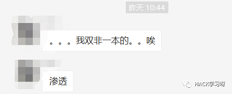
我想表达的并不是他能力不够，我相信一本的学生整体学习能力是很强的。他可能只是入门晚，缺人指点。缺一个像咱HACK学习呀公众号这种学习指南。
说了这么多，大家可能觉得是废话，但是半路出家没人指点的痛苦我相信各位自学的朋友肯定都深有体会，包括我也是。这里就简单写一下我为申请cve做的一些努力和总结的方法，方便大家学习。
0x01 学习思路
凡是自学，百度肯定是少不了的，参考他人的学习方法吸收经验亦是进步。这些是我常用的“搜索引擎”：www.baidu.com、google、www.freebuf.com、xz.aliyun.com、4hou.com、www.t00ls.net、www.secquan.org、forum.90sec.com等等
通过这些搜索PHP代码审计，你会发现五花八门的教程。有质量优的，质量差的。质量优的不懂代码审计的你看不来，质量差的看完没进步。
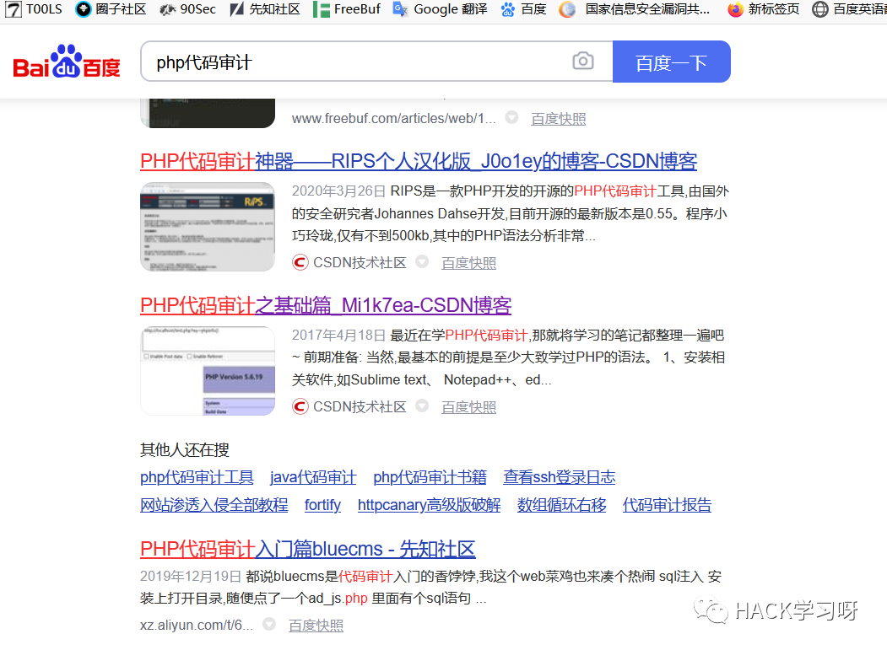
搜索PHP代码审计入门，有些是各种漏洞的介绍，但我相信近几年大家学某些漏洞肯定都是从代码层来学的。那这些介绍漏洞的代码审计入门文章对你的帮助其实不是很大了，因为你已经懂了漏洞的形成原理。且如果给你针对的注入上传的函数代码，那这真的太简单了。
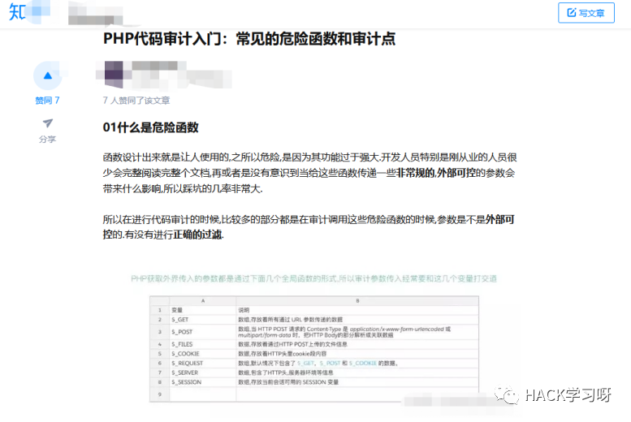
而有些文章他们大体都说了代码审计的总体流程，其实你通过这些流程大致已经懂了代码审计中要做什么。可以全局看，可以针对流量去看什么的。

但你是否觉得自己这样零散的学缺了一个中心点呢？我称它为树干。
这个树干是什么呢？在我眼中他是代码开发能力，它决定了你的总体高度。为什么这么说呢，你想审计它你总得看得懂吧。当然我这里的看得懂，不是指读懂某些直观漏洞的代码，实际cms当中会出现各种各样得问题，一个人这么写，一个人那么写。你通过学漏洞的代码真的看得懂开发者得整体流程吗？简单得那些不用说了，稍微难一点点，用点对象，用点框架，你真的看得懂吗?看不懂就可以洗洗睡了，学习人。

除了树干之外，一棵树少不了树枝。那树枝是什么呢？树枝就是我上面所说的百度PHP代码审计的东西。
（1）有每种漏洞的利用套路。如我们最基础的漏洞，不同的注入方法，不同的上传绕过方法，不同的xss利用方法，不同的代码执行方式。
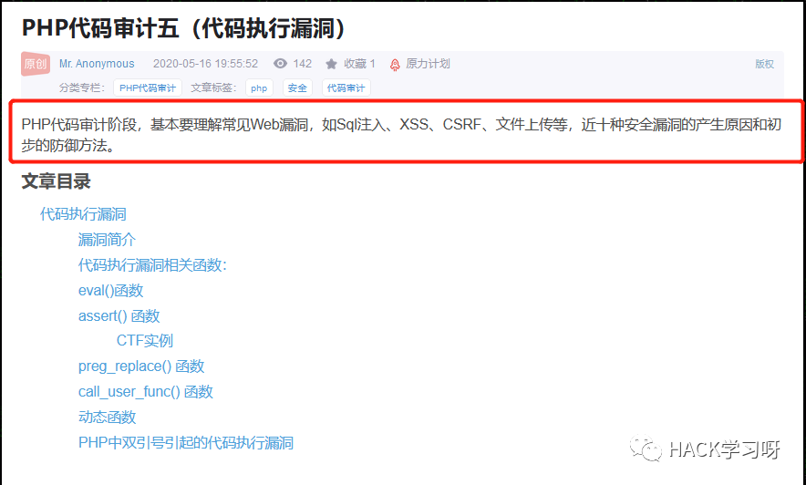
（2）有人家复现的整体流程。通过人家的文章去学习如何从头到尾审计一门cms，先看什么后看什么，哪些需要着重的看。
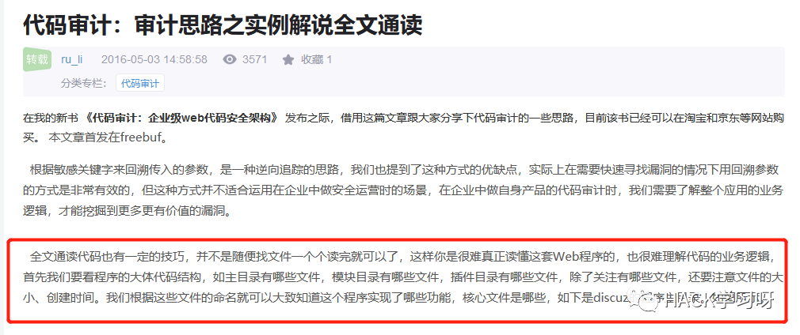
（3）有针对每种漏洞的研究性文章。在这一模块我喜欢直接去做ctf，看各种不同漏洞的高难度研究文章。这一块可以锻炼你的极端环境解决能力，虽然这一块很难很复杂。但是你想走到人家达不到的高处，就得学人家学不会且使用的技能。
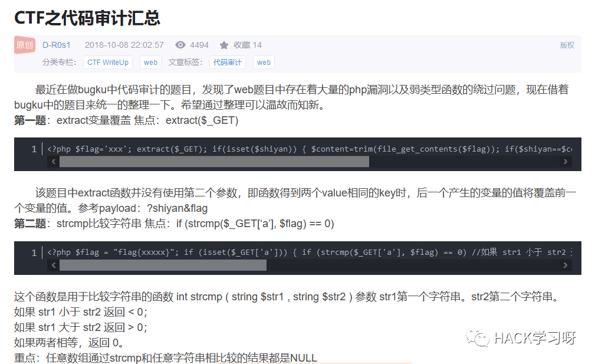
这些在你代码足够OK的前提下吃透不是很难，只有当你树干足够强大了，树枝才能长得好。当然你说自己代码一般般，也能审计出漏洞这也是很正常的。
树干在你接触某一门语言时已经开始成长了，你也许在学习漏洞时提升了代码阅读能力，在打ctf时提升了代码阅读能力。让你感觉其实代码审计也挺简单的，这些都是路子。树枝吸收的营养最后还是会给到树干，但对于我这种打ctf脑子转不过来，看人家复现cms漏洞流程越看越懵逼的人，在学习审计时先把代码基础完善比较好。
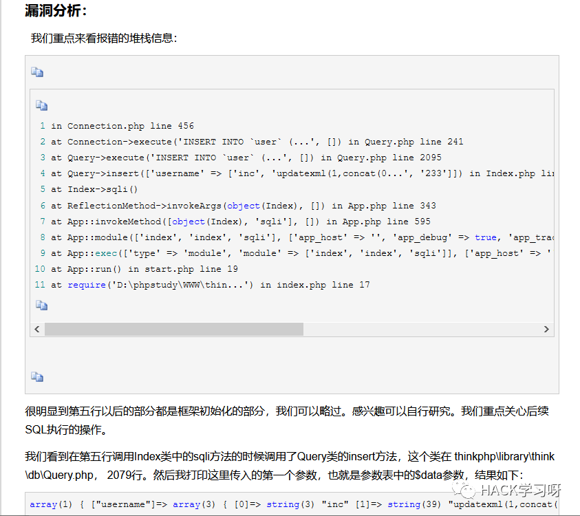
条条大路通罗马，每条路都能走通的。做ctf的代码题，可以提升自己对某些知识点的研究。看人家总结审计漏洞的文章，可以让自己懂得开发者经常会犯的BUG！
如果这是LOL，那我会主点开发，副点CTF，再点思路。在这里就是我对自己审计的态度，学好开发，打好CTF。
0x02 简单分析流程
在这里简单把我之前某个二货十足的洞说一下，主要为了练习自己的代码阅读能力。从工具匹配到的漏洞我都去读了一遍。
在ucms1.5.0的/install/index.php中的$_POST['mysql_dbname']存在XSS漏洞。漏洞点在当前文件的226行
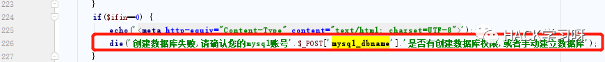
在这里存在着一个触发条件$ifin等于0，继续往上看。从210行开始对$ifin进行赋值处理
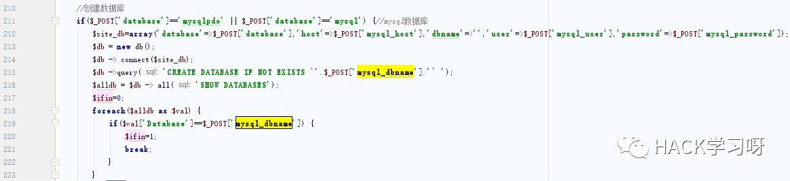
在217行第一次给$ifin赋值0，然后进入218行的循环判断，判断$val['Database']是否和传入的'mysql_dbname'是否相等。如果相等那么$ifin为1，这样就不会执行我们的die()操作。在这里寻找'mysql_dbname'不等于$val['Database']的逻辑条件。
$val是$alldb数组的中的一个键，在这里看$alldb数组是如何产生的。回到216行，可以看到他是$db->all('SHOW DATABASES')后返回的数据。在这里可以看一下$db类的all()方法。
它将传入的$sql给如$this->query()函数
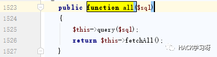
在$this->query()中使用了原生的查询函数mysql_query() 对传入的$sql进行查询
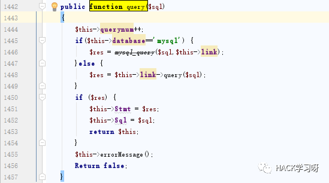
在这里回到216行，可以明确这里的作用是将后面的代码传入数据库执行。SQL语句的意思是查看所有数据库，那么配合219行之后的内容来说就是当数据库内不存在$_POST['mysql_dbname']的数据库名时$ifin=0。
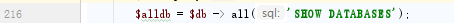
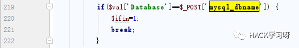
但是这里还有一个点在215行，这里会将$_POST['mysql_dbname']传入的值写入数据库。写入数据库后再show databases，那么正常逻辑来说这里是不会导致$ifin=0的。
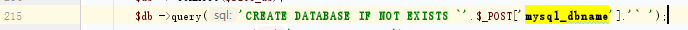
将传入的字符写入数据库再查询出来和传入的字符进行比较，如果不等则触发XSS。这里就存在着问题，如何才能让他们两不相等呢？真相就是sql注入的闭合注释！
但是这里存在着一个问题，就是闭合符号并不是单引号'，而是` 。在这里我们可以传入ucms1.5.0` -- |<script>alert("xss")</script>。这样数据库内写入的就是ucms1.5.0数据库名，再次show databases查询出来和传入的ucms1.5.0` -- |<script>alert("xss")</script> 进行对比时就会不一样，从而触发XSS!
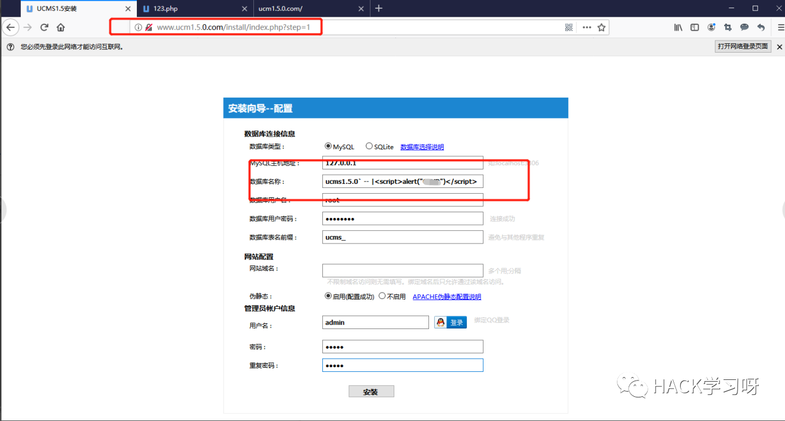
点击安装之后会触发step=2，并且触发XSS
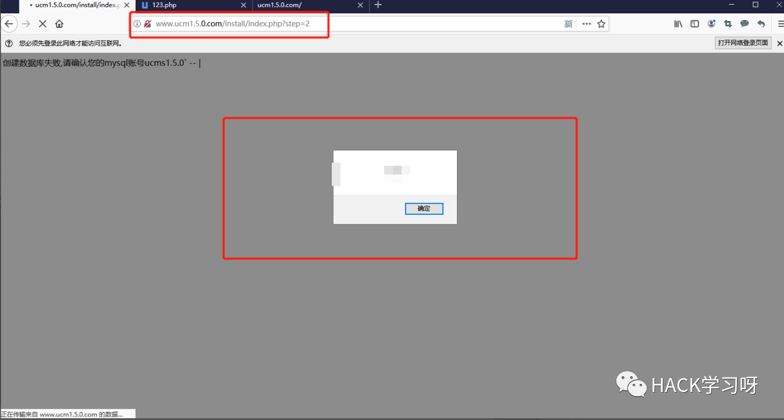
看完是不是觉得这二货写的啥，这洞有什么意思。我自己都有这种感觉，我在干嘛，我是谁。之所以想读还是因为想练习读代码的能力，就像其他师傅说的。读越多的代码，审越多的洞，以后的大洞都是这些小玩意儿积累起来的。
0X03申请过程
我那个cve也就一个上传命令执行，感觉就是基础漏洞。没有搬到文章里的必要，在这里就主要写一下我申请的流程。
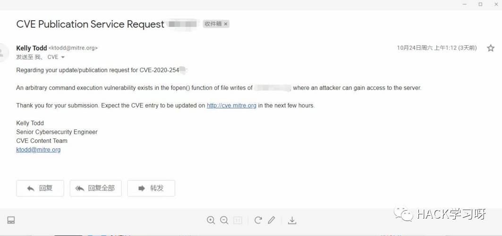
在这里我参考了套哥的文章https://www.freebuf.com/168362.html，有兴趣的同学可以认证看一下。但是我比较懒，还是直接把必要流程写写好了。
直接访问https://cveform.mitre.org/申请，这个杂七杂八都要！
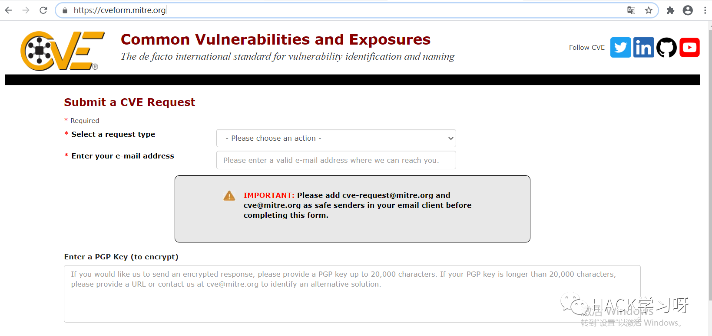
这个看不懂就谷歌翻译，这里选一个申请cveid。
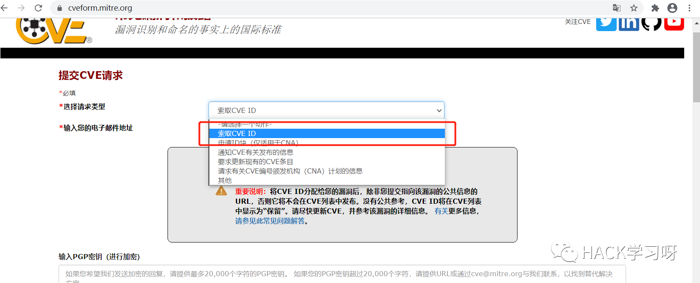
其他就按照翻译来填写
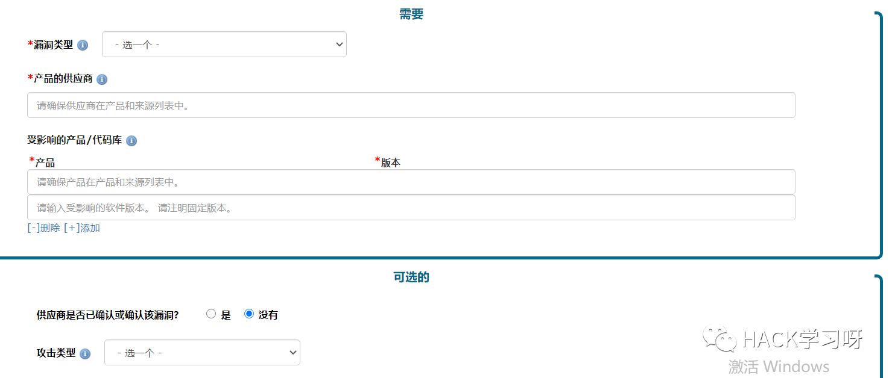
在这里主要就是参考资料模块，因为你可能写了整体的过程。这里框太小放不下，你就可以扔一个自己的github链接，把发现过程写在自己的github里。你放其他平台链接，人家可能不点。
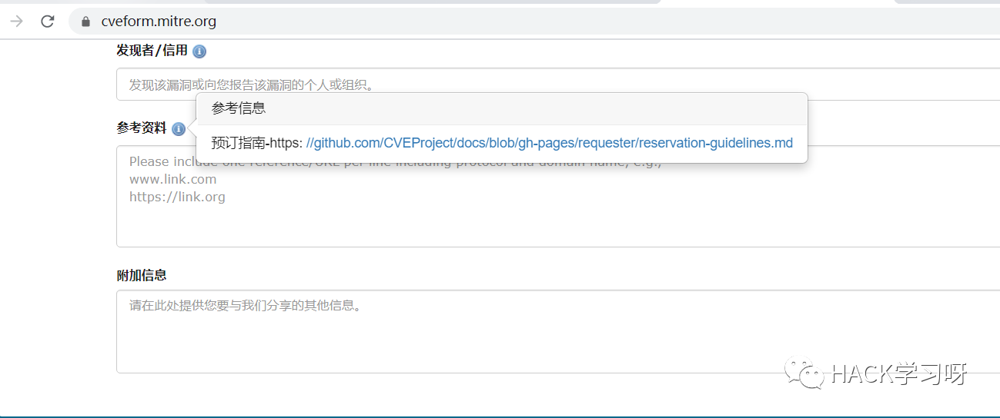
文章的格式可以按照我这样的来写BLUECMS 1.6 Value parameter has SQL injection## Vulnerability Type :SQL Injection## Vulnerability Version :1.6## Recurring environment:* Windows 10* PHP 5.4.5* Apache 2.4.23## Vulnerability Description AND recurrence:这里就写自己的发现过程
申请的内容全部翻译成英文，还有就是人家的审核时间可能不是其他人所说的3-5天。可能是几周，看运气了。
0x03 结束寄语
不管是半路出家的还是正规军，学自己学热爱的是一件庆幸的事情。每个人有不同的学习方法，有人适合我说的方法，有人不适合我说的方法。在这里我也只是分享自己学习代码审计的一个思路，低质量cve其实就是附带的。。当我们有了明确的目标之后，加上合理的学习方法。最后就只要堆时间莽就好了，事半功倍总那么让人感觉舒适。
在这里感谢贝塔安全实验室的Leafer师傅在我学习审计时给出的指导！
最后祝各位师傅能找到合适的工作，拿着高额的薪水抱着心爱的妹子！

点赞 转发 在看